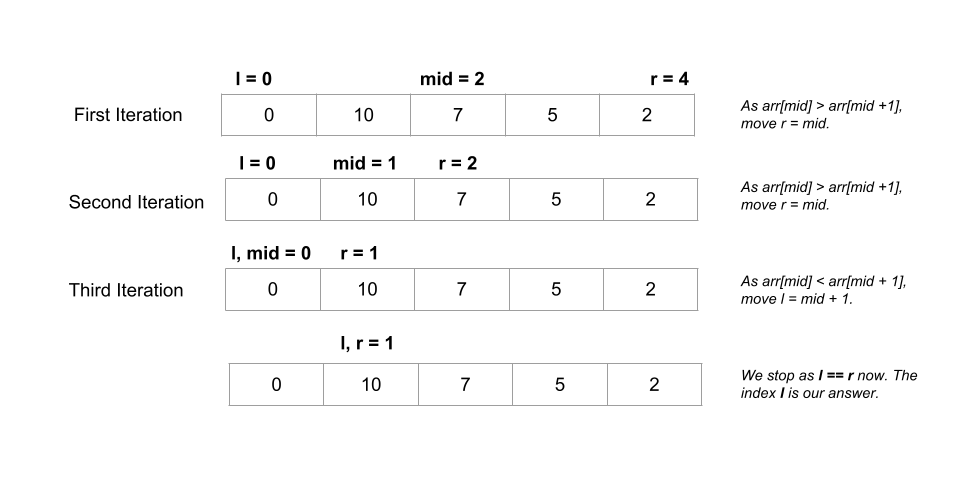

Given a mountain array arr, our task is to return the index i such that arr[0] <
arr[1] < ... < arr[i - 1] < arr[i] > arr[i + 1] > ... > arr[arr.length - 1]. In simpler
terms, all elements to the left are sorted ascending and all elements to the right are sorted descending.
We are guaranteed to have an array of the form arr[0] < arr[1] < ... < arr[i - 1] < arr[i] >
arr[i + 1] > ... > arr[arr.length - 1]. As our task is to find the index i (called the
peak index of the mountain array), we can iterate over the array starting from the first element.
We can create a pointer i and set it to 0 to point to the first element. We compare the
current element at index i with the next element at index i + 1. If arr[i] <
arr[i + 1], it means we haven't got the peak of the mountain yet. As a result, we increment
i by 1 in this case to move to the next element. Otherwise, the first time we see arr[i]
> arr[i + 1], we return i.
i and initialize it to 0.i is smaller than the next element at
index i + 1. If arr[i] < arr[i + 1], increment i by 1.
Otherwise, if arr[i] > arr[i + 1], we return i.
Java
class Solution {
public int peakIndexInMountainArray(int[] arr) {
int i = 0;
while (arr[i] < arr[i + 1]) {
i++;
}
return i;
}
}
C++
class Solution {
public:
int peakIndexInMountainArray(vector& arr) {
int i = 0;
while (arr[i] < arr[i + 1]) {
i++;
}
return i;
}
};
Python3
class Solution:
def peakIndexInMountainArray(self, arr: List[int]) -> int:
i = 0
while arr[i] < arr[i + 1]:
i += 1
return i
Here nn
is the length of arr.
Time complexity: O(n)O(n).
arr array. In the worst-case situation, the peak of the mountain could correspond to
the second last element of arr, in which case we would take O(n)O(n)
time.
Space complexity: O(1)O(1).
i, which takes up constant space.
In a mountain array with peak index i, any element at index with index less
than i would obey arr[index] < arr[index + 1]. Furthermore, any index
greater than or equal to i would follow the rule arr[index] > arr[index + 1] (and not
obey arr[index] < arr[index + 1]).
A scenario like this where our task is to search for an element i from a given range (l, r)
where all values smaller than i satisfy a certain condition and all values greater than or equal to
i do not satisfy it (or vice-versa) can be solved optimally with a binary search algorithm. In binary
search, we repeatedly divide the solution space where the answer could be in half until the range contains just one
element.
Following the above discussion, we use binary search to solve this problem. We create an integer l and
initialize it to the starting index 0. We also create another integer variable r and set
it to the last index of arr, i.e., arr.length - 1.
We get the middle of the range mid = (l + r) / 2 and compare arr[mid] with the next
element. If arr[mid] < arr[mid + 1], we move to the upper half of the range by setting l = mid
+ 1 as our peak index is definitely greater than mid. Otherwise, if arr[mid] >
arr[mid + 1], we move to the lower half of the range by setting r = mid as the peak index is
either mid or some index smaller than mid.
The answer would be within the range (l, r) at any point. All the indices smaller than l
are indices smaller than the peak index and all indices greater than r are indices greater than the
peak index. We continue the search as long as l < r.
When l == r, l (or r) denotes the required peak index.
Here is a visual representation of an example to illustrate how it works:

l and r to store the solution space of the problem. We
initialize l with 0 and r to arr.length - 1.
l < r:
mid = (l + r) / 2.arr[mid] < arr[mid + 1], it indicates peak index is greather than mid.
As a result, we move to upper half of the range by setting left = mid + 1.
arr[mid] >= arr[mid + 1], it indicates that the peak index is either
mid or some index smaller than mid. As a result, we move to the lower half of
the range by setting r = mid.
l (or r as both are equal now).
Java
class Solution {
public int peakIndexInMountainArray(int[] arr) {
int l = 0, r = arr.length - 1, mid;
while (l < r) {
mid = (l + r) / 2;
if (arr[mid] < arr[mid + 1])
l = mid + 1;
else
r = mid;
}
return l;
}
}
C++
class Solution {
public:
int peakIndexInMountainArray(vector& arr) {
int l = 0, r = arr.size() - 1, mid;
while (l < r) {
mid = (l + r) / 2;
if (arr[mid] < arr[mid + 1])
l = mid + 1;
else
r = mid;
}
return l;
}
};
Python3
class Solution:
def peakIndexInMountainArray(self, arr: List[int]) -> int:
l = 0
r = len(arr)
while l < r:
mid = (l + r) // 2
if arr[mid] < arr[mid + 1]:
l = mid + 1
else:
r = mid
return l
Here nn
is the length of arr.
Time complexity: O(logn)O(\log n).
Space complexity: O(1)O(1).
l, r, and mid which take constant
space each, we do not consume any other space.